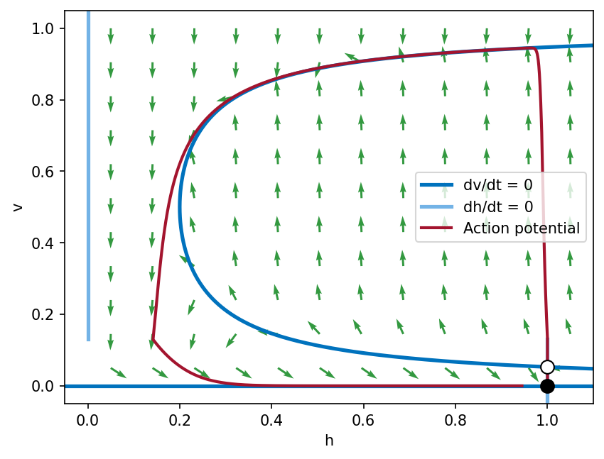
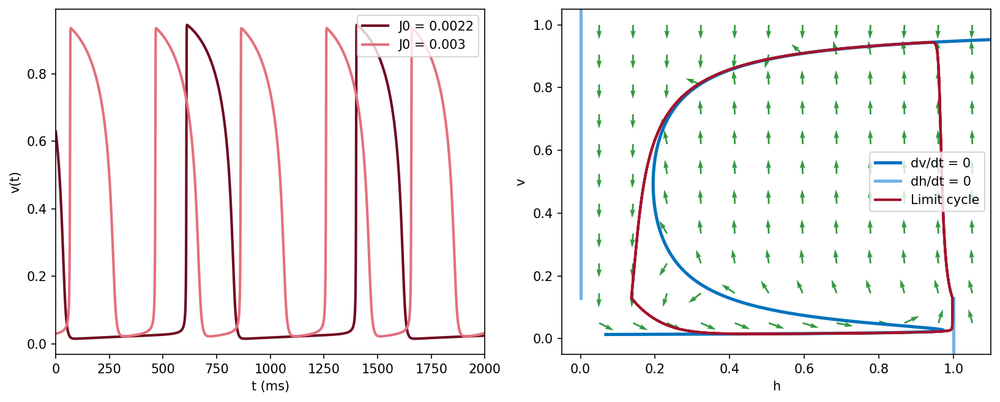

Chapter 4 · Continuous Dynamical Systems with Several Variables
4.5In Depth: Excitability in the Phase Plane
With h as the second variable, the Mitchell–Schaeffer model from Section 3.5 becomes a system in the phase plane. Nullclines and direction field explain threshold, action potential, and recovery. A constant inward current J0 makes the resting state disappear: a limit cycle arises, the model of a pacemaker cell.
For each figure of the section you will find the program that produces it. Change parameters and initial values and observe what happens. Figure and equation numbers refer to the book.
Fig. 4.24
Action potential in the phase plane
dv/dt = h v2 (1 − v)/τin − v/τout + J0, J0 = 0
After the stimulus, v jumps up and h decreases slowly until the v-nullcline ends; then v falls back and h recovers.

# Fig. 4.24: Phase plane of the Mitchell-Schaeffer model (book, Section 4.5, Eq. 4.20)
# dv/dt = h v^2 (1 - v)/tin - v/tout + J0, dh/dt = (1 - h)/topen for v < vgate, -h/tclose otherwise; J0 = 0
# nullclines, direction field, resting state (1, 0), threshold, and the action potential after a stimulus at t = 1 ms
# (c) 2026 Philipp Kügler · Program for the book "Dynamical Systems in the Life Sciences" · MIT License (see LICENSE)
using Printf, Plots
R1 = RGB(0.43, 0.04, 0.12); R2 = RGB(0.64, 0.08, 0.18); R3 = RGB(0.89, 0.44, 0.49)
BL = RGB(0, 0.447, 0.741); HB = RGB(0.45, 0.70, 0.90); GR = RGB(0.2, 0.6, 0.25)
tin = 0.3; tout = 6.0; topen = 100.0; tclose = 115.0; vgate = 0.13 # parameters in ms
hc = 4 * tin / tout
function simuliere(T; J0 = 0.0, reize = (), J = 0.2, dauer = 2.0, dt = 0.01)
# Euler's method for the Mitchell-Schaeffer model with constant current J0 and stimuli of strength J
N = round(Int, T / dt); t = dt .* (0:N)
Jt = fill(J0, N + 1)
for s in reize
Jt[(t .>= s - 1e-9) .& (t .< s + dauer - 1e-9)] .+= J
end
v = zeros(N + 1); h = ones(N + 1)
for n in 1:N
dv = h[n] * v[n]^2 * (1 - v[n]) / tin - v[n] / tout + Jt[n]
dh = v[n] < vgate ? (1 - h[n]) / topen : -h[n] / tclose
v[n + 1] = v[n] + dt * dv; h[n + 1] = h[n] + dt * dh
end
return t, v, h
end
function nullklinen!(p, J0)
v = range(0.003, 0.997, length = 2000)
H = (v ./ tout .- J0) ./ (v .^ 2 .* (1 .- v) ./ tin) # dv/dt = 0 solved for h
m = (H .>= -0.05) .& (H .<= 1.1)
plot!(p, H[m], v[m], color = BL, lw = 2.5, label = "dv/dt = 0")
J0 == 0 && plot!(p, [-0.05, 1.1], [0, 0], color = BL, lw = 2.5, label = "")
plot!(p, [1, 1], [-0.05, vgate], color = HB, lw = 2.5, label = "dh/dt = 0")
plot!(p, [0, 0], [vgate, 1.05], color = HB, lw = 2.5, label = "")
end
function feld!(p, J0)
hg = [h for h in range(0.05, 1.05, length = 12), v in range(0.05, 1.0, length = 11)][:]
vg = [v for h in range(0.05, 1.05, length = 12), v in range(0.05, 1.0, length = 11)][:]
dv = hg .* vg .^ 2 .* (1 .- vg) ./ tin .- vg ./ tout .+ J0
dh = ifelse.(vg .< vgate, (1 .- hg) ./ topen, -hg ./ tclose)
L = hypot.(dh, dv) ./ 0.052
quiver!(p, hg, vg, quiver = (dh ./ L, dv ./ L), color = GR, label = "")
end
t, v, h = simuliere(500, reize = [1.0])
vs = (1 - sqrt(1 - hc)) / 2
@printf("resting state (h, v) = (1, 0), threshold (1, %.4f), peak of the action potential v = %.4f\n", vs, maximum(v))
@printf("after 500 ms: (h, v) = (%.4f, %.4f)\n", h[end], v[end])
p = plot(xlims = (-0.05, 1.1), ylims = (-0.05, 1.05), xlabel = "h", ylabel = "v", legend = :right)
feld!(p, 0); nullklinen!(p, 0)
plot!(p, h, v, color = R2, lw = 2, label = "Action potential")
scatter!(p, [1], [0], color = :black, ms = 7, label = ""); scatter!(p, [1], [vs], color = :white, msc = :black, ms = 7, label = "")
display(p)% Fig. 4.24: Phase plane of the Mitchell-Schaeffer model (book, Section 4.5, Eq. 4.20)
% dv/dt = h v^2 (1 - v)/tin - v/tout + J0, dh/dt = (1 - h)/topen for v < vgate, -h/tclose otherwise; J0 = 0
% nullclines, direction field, resting state (1, 0), threshold, and the action potential after a stimulus at t = 1 ms
% (c) 2026 Philipp Kügler · Program for the book "Dynamical Systems in the Life Sciences" · MIT License (see LICENSE)
tin = 0.3; tout = 6; topen = 100; tclose = 115; vgate = 0.13; % parameters in ms
hc = 4 * tin / tout;
J = 0.2; dauer = 2; dt = 0.01;
J0 = 0; T = 500; reize = 1;
N = round(T / dt); t = dt * (0:N);
Jt = J0 * ones(1, N + 1);
for s = reize
Jt(t >= s - 1e-9 & t < s + dauer - 1e-9) = J0 + J; % stimulus of strength J for 'dauer' ms
end
v = zeros(1, N + 1); h = ones(1, N + 1);
for n = 1:N % Euler's method
dv = h(n) * v(n)^2 * (1 - v(n)) / tin - v(n) / tout + Jt(n);
if v(n) < vgate, dh = (1 - h(n)) / topen; else, dh = -h(n) / tclose; end
v(n + 1) = v(n) + dt * dv; h(n + 1) = h(n) + dt * dh;
end
vs = (1 - sqrt(1 - hc)) / 2;
fprintf('resting state (h, v) = (1, 0), threshold (1, %.4f), peak of the action potential v = %.4f\n', vs, max(v));
fprintf('after 500 ms: (h, v) = (%.4f, %.4f)\n', h(end), v(end));
% direction field (arrows of equal length) and nullclines
[hg, vg] = meshgrid(linspace(0.05, 1.05, 12), linspace(0.05, 1.0, 11));
dvg = hg .* vg.^2 .* (1 - vg) / tin - vg / tout + J0;
dhg = (vg < vgate) .* (1 - hg) / topen - (vg >= vgate) .* hg / tclose;
L = sqrt(dvg.^2 + dhg.^2);
quiver(hg, vg, dhg ./ L, dvg ./ L, 0.4, 'Color', [0.2 0.6 0.25]); hold on
vv = linspace(0.003, 0.997, 2000);
H = (vv / tout - J0) ./ (vv.^2 .* (1 - vv) / tin); % dv/dt = 0 solved for h
m = H >= -0.05 & H <= 1.1;
plot(H(m), vv(m), 'Color', [0 0.447 0.741], 'LineWidth', 2.5);
if J0 == 0, plot([-0.05 1.1], [0 0], 'Color', [0 0.447 0.741], 'LineWidth', 2.5); end
plot([1 1], [-0.05 vgate], 'Color', [0.45 0.70 0.90], 'LineWidth', 2.5);
plot([0 0], [vgate 1.05], 'Color', [0.45 0.70 0.90], 'LineWidth', 2.5);
plot(h, v, 'Color', [0.64 0.08 0.18], 'LineWidth', 2);
plot(1, 0, 'ko', 'MarkerFaceColor', 'k', 'MarkerSize', 9); plot(1, vs, 'ko', 'MarkerFaceColor', 'w', 'MarkerSize', 9); hold off
xlim([-0.05 1.1]); ylim([-0.05 1.05]); xlabel('h'); ylabel('v');# Fig. 4.24: Phase plane of the Mitchell-Schaeffer model (book, Section 4.5, Eq. 4.20)
# dv/dt = h v^2 (1 - v)/tin - v/tout + J0, dh/dt = (1 - h)/topen for v < vgate, -h/tclose otherwise; J0 = 0
# nullclines, direction field, resting state (1, 0), threshold, and the action potential after a stimulus at t = 1 ms
# (c) 2026 Philipp Kügler · Program for the book "Dynamical Systems in the Life Sciences" · MIT License (see LICENSE)
import numpy as np
import matplotlib.pyplot as plt
tin, tout, topen, tclose, vgate = 0.3, 6.0, 100.0, 115.0, 0.13 # parameters in ms
hc = 4 * tin / tout
def simuliere(T, J0=0.0, reize=(), J=0.2, dauer=2.0, dt=0.01):
"""Euler method for the Mitchell-Schaeffer model with constant current J0 and stimuli of strength J."""
N = int(round(T / dt)); t = dt * np.arange(N + 1)
Jt = np.full(N + 1, J0)
for s in reize:
Jt[(t >= s - 1e-9) & (t < s + dauer - 1e-9)] += J
v = np.zeros(N + 1); h = np.ones(N + 1)
for n in range(N):
dv = h[n] * v[n]**2 * (1 - v[n]) / tin - v[n] / tout + Jt[n]
dh = (1 - h[n]) / topen if v[n] < vgate else -h[n] / tclose
v[n + 1] = v[n] + dt * dv; h[n + 1] = h[n] + dt * dh
return t, v, h
def nullklinen(ax, J0):
v = np.linspace(0.003, 0.997, 2000)
H = (v / tout - J0) / (v**2 * (1 - v) / tin) # dv/dt = 0 solved for h
m = (H >= -0.05) & (H <= 1.1)
ax.plot(H[m], v[m], color=(0, 0.447, 0.741), lw=2.5, label="dv/dt = 0")
if J0 == 0: ax.plot([-0.05, 1.1], [0, 0], color=(0, 0.447, 0.741), lw=2.5)
ax.plot([1, 1], [-0.05, vgate], color=(0.45, 0.70, 0.90), lw=2.5, label="dh/dt = 0")
ax.plot([0, 0], [vgate, 1.05], color=(0.45, 0.70, 0.90), lw=2.5)
def feld(ax, J0):
hg, vg = np.meshgrid(np.linspace(0.05, 1.05, 12), np.linspace(0.05, 1.0, 11))
dv = hg * vg**2 * (1 - vg) / tin - vg / tout + J0
dh = np.where(vg < vgate, (1 - hg) / topen, -hg / tclose)
L = np.hypot(dh, dv)
ax.quiver(hg, vg, dh / L, dv / L, color=(0.2, 0.6, 0.25), angles="xy", scale_units="xy", scale=22, width=0.004)
t, v, h = simuliere(500, reize=[1.0])
vs = (1 - np.sqrt(1 - hc)) / 2
print(f"resting state (h, v) = (1, 0), threshold (1, {vs:.4f}), peak of the action potential v = {v.max():.4f}")
print(f"after 500 ms: (h, v) = ({h[-1]:.4f}, {v[-1]:.4f})")
fig, ax = plt.subplots()
feld(ax, 0); nullklinen(ax, 0)
ax.plot(h, v, color=(0.64, 0.08, 0.18), lw=2, label="Action potential")
ax.plot(1, 0, "ko", ms=9); ax.plot(1, vs, "o", mfc="w", mec="k", ms=9)
ax.set_xlim(-0.05, 1.1); ax.set_ylim(-0.05, 1.05); ax.set_xlabel("h"); ax.set_ylabel("v"); ax.legend(loc="center right")
plt.show()# Fig. 4.24: Phase plane of the Mitchell-Schaeffer model (book, Section 4.5, Eq. 4.20)
# dv/dt = h v^2 (1 - v)/tin - v/tout + J0, dh/dt = (1 - h)/topen for v < vgate, -h/tclose otherwise; J0 = 0
# nullclines, direction field, resting state (1, 0), threshold, and the action potential after a stimulus at t = 1 ms
# (c) 2026 Philipp Kügler · Program for the book "Dynamical Systems in the Life Sciences" · MIT License (see LICENSE)
tin <- 0.3; tout <- 6; topen <- 100; tclose <- 115; vgate <- 0.13 # parameters in ms
hc <- 4 * tin / tout
simuliere <- function(T, J0 = 0, reize = c(), J = 0.2, dauer = 2, dt = 0.01) {
# Euler's method for the Mitchell-Schaeffer model with constant current J0 and stimuli of strength J
N <- round(T / dt); t <- dt * (0:N)
Jt <- rep(J0, N + 1)
for (s in reize) Jt[t >= s - 1e-9 & t < s + dauer - 1e-9] <- J0 + J
v <- numeric(N + 1); h <- rep(1, N + 1)
for (n in 1:N) {
dv <- h[n] * v[n]^2 * (1 - v[n]) / tin - v[n] / tout + Jt[n]
dh <- if (v[n] < vgate) (1 - h[n]) / topen else -h[n] / tclose
v[n + 1] <- v[n] + dt * dv; h[n + 1] <- h[n] + dt * dh
}
list(t = t, v = v, h = h)
}
nullklinen <- function(J0) {
v <- seq(0.003, 0.997, length.out = 2000)
H <- (v / tout - J0) / (v^2 * (1 - v) / tin) # dv/dt = 0 solved for h
m <- H >= -0.05 & H <= 1.1
lines(H[m], v[m], col = rgb(0, 0.447, 0.741), lwd = 2.5)
if (J0 == 0) lines(c(-0.05, 1.1), c(0, 0), col = rgb(0, 0.447, 0.741), lwd = 2.5)
lines(c(1, 1), c(-0.05, vgate), col = rgb(0.45, 0.70, 0.90), lwd = 2.5); lines(c(0, 0), c(vgate, 1.05), col = rgb(0.45, 0.70, 0.90), lwd = 2.5)
}
feld <- function(J0) {
g <- expand.grid(h = seq(0.05, 1.05, length.out = 12), v = seq(0.05, 1.0, length.out = 11))
dv <- g$h * g$v^2 * (1 - g$v) / tin - g$v / tout + J0
dh <- ifelse(g$v < vgate, (1 - g$h) / topen, -g$h / tclose)
L <- sqrt(dh^2 + dv^2)
arrows(g$h, g$v, g$h + dh / L * 0.045, g$v + dv / L * 0.045, length = 0.03, col = rgb(0.2, 0.6, 0.25))
}
x <- simuliere(500, reize = 1)
vs <- (1 - sqrt(1 - hc)) / 2
cat(sprintf("resting state (h, v) = (1, 0), threshold (1, %.4f), peak of the action potential v = %.4f\n", vs, max(x$v)))
cat(sprintf("after 500 ms: (h, v) = (%.4f, %.4f)\n", x$h[length(x$h)], x$v[length(x$v)]))
plot(NULL, xlim = c(-0.05, 1.1), ylim = c(-0.05, 1.05), xlab = "h", ylab = "v")
feld(0); nullklinen(0)
lines(x$h, x$v, col = rgb(0.64, 0.08, 0.18), lwd = 2)
points(1, 0, pch = 16, cex = 1.3); points(1, vs, pch = 21, bg = "white", cex = 1.3)
legend("right", legend = c("dv/dt = 0", "dh/dt = 0", "Action potential"), col = c(rgb(0, 0.447, 0.741), rgb(0.45, 0.70, 0.90), rgb(0.64, 0.08, 0.18)), lwd = 2)Output in the command window
resting state (h, v) = (1, 0), threshold (1, 0.0528), peak of the action potential v = 0.9451
after 500 ms: (h, v) = (0.9445, 0.0000)Fig. 4.25
Pacemaker and limit cycle
J0 > Jc ≈ 0.00214
Above Jc there is no steady state anymore, and the cell excites itself periodically. The larger J0, the shorter the period.

# Fig. 4.25: Mitchell-Schaeffer model with pacemaker current (book, Section 4.5, Eq. 4.20)
# constant inward current J0 > J_c: left periodic action potentials for J0 = 0.0022 and 0.003,
# right the limit cycle for J0 = 0.0022 with the nullclines (there is no steady state anymore)
# (c) 2026 Philipp Kügler · Program for the book "Dynamical Systems in the Life Sciences" · MIT License (see LICENSE)
using Printf, Plots
R1 = RGB(0.43, 0.04, 0.12); R2 = RGB(0.64, 0.08, 0.18); R3 = RGB(0.89, 0.44, 0.49)
BL = RGB(0, 0.447, 0.741); HB = RGB(0.45, 0.70, 0.90); GR = RGB(0.2, 0.6, 0.25)
tin = 0.3; tout = 6.0; topen = 100.0; tclose = 115.0; vgate = 0.13 # parameters in ms
hc = 4 * tin / tout
function simuliere(T; J0 = 0.0, reize = (), J = 0.2, dauer = 2.0, dt = 0.01)
# Euler's method for the Mitchell-Schaeffer model with constant current J0 and stimuli of strength J
N = round(Int, T / dt); t = dt .* (0:N)
Jt = fill(J0, N + 1)
for s in reize
Jt[(t .>= s - 1e-9) .& (t .< s + dauer - 1e-9)] .+= J
end
v = zeros(N + 1); h = ones(N + 1)
for n in 1:N
dv = h[n] * v[n]^2 * (1 - v[n]) / tin - v[n] / tout + Jt[n]
dh = v[n] < vgate ? (1 - h[n]) / topen : -h[n] / tclose
v[n + 1] = v[n] + dt * dv; h[n + 1] = h[n] + dt * dh
end
return t, v, h
end
function nullklinen!(p, J0)
v = range(0.003, 0.997, length = 2000)
H = (v ./ tout .- J0) ./ (v .^ 2 .* (1 .- v) ./ tin) # dv/dt = 0 solved for h
m = (H .>= -0.05) .& (H .<= 1.1)
plot!(p, H[m], v[m], color = BL, lw = 2.5, label = "dv/dt = 0")
J0 == 0 && plot!(p, [-0.05, 1.1], [0, 0], color = BL, lw = 2.5, label = "")
plot!(p, [1, 1], [-0.05, vgate], color = HB, lw = 2.5, label = "dh/dt = 0")
plot!(p, [0, 0], [vgate, 1.05], color = HB, lw = 2.5, label = "")
end
function feld!(p, J0)
hg = [h for h in range(0.05, 1.05, length = 12), v in range(0.05, 1.0, length = 11)][:]
vg = [v for h in range(0.05, 1.05, length = 12), v in range(0.05, 1.0, length = 11)][:]
dv = hg .* vg .^ 2 .* (1 .- vg) ./ tin .- vg ./ tout .+ J0
dh = ifelse.(vg .< vgate, (1 .- hg) ./ topen, -hg ./ tclose)
L = hypot.(dh, dv) ./ 0.052
quiver!(p, hg, vg, quiver = (dh ./ L, dv ./ L), color = GR, label = "")
end
f(v) = v^2 * (1 - v) / tin - v / tout
Jc = -minimum(f.(range(0, 0.2, length = 200001)))
@printf("J_c = %.5f\n", Jc)
p1 = plot(xlims = (0, 2000), xlabel = "t (ms)", ylabel = "v(t)", legend = :topright)
p2 = plot(xlims = (-0.05, 1.1), ylims = (-0.05, 1.05), xlabel = "h", ylabel = "v", legend = :right)
for (J0, farbe) in [(0.0022, R1), (0.003, R3)]
t, v, h = simuliere(3000, J0 = J0)
hoch = t[2:end][(v[1:end - 1] .< 0.5) .& (v[2:end] .>= 0.5)] # start of each action potential
@printf("J0 = %g: period %.0f ms\n", J0, hoch[end] - hoch[end - 1])
m = t .>= 400
plot!(p1, t[m] .- 400, v[m], color = farbe, lw = 2, label = "J0 = $J0")
if J0 == 0.0022
m = t .>= 1500
feld!(p2, J0); nullklinen!(p2, J0)
plot!(p2, h[m], v[m], color = R2, lw = 2, label = "Limit cycle")
end
end
display(plot(p1, p2, layout = (1, 2), size = (900, 420)))% Fig. 4.25: Mitchell-Schaeffer model with pacemaker current (book, Section 4.5, Eq. 4.20)
% constant inward current J0 > J_c: left periodic action potentials for J0 = 0.0022 and 0.003,
% right the limit cycle for J0 = 0.0022 with the nullclines (there is no steady state anymore)
% (c) 2026 Philipp Kügler · Program for the book "Dynamical Systems in the Life Sciences" · MIT License (see LICENSE)
tin = 0.3; tout = 6; topen = 100; tclose = 115; vgate = 0.13; % parameters in ms
hc = 4 * tin / tout;
J = 0.2; dauer = 2; dt = 0.01;
vv = linspace(0, 0.2, 200001);
Jc = -min(vv.^2 .* (1 - vv) / tin - vv / tout);
fprintf('J_c = %.5f\n', Jc);
J0s = [0.0022 0.003]; farben = [0.43 0.04 0.12; 0.89 0.44 0.49];
for j = 1:2
J0 = J0s(j); T = 3000; reize = [];
N = round(T / dt); t = dt * (0:N);
Jt = J0 * ones(1, N + 1);
for s = reize
Jt(t >= s - 1e-9 & t < s + dauer - 1e-9) = J0 + J; % stimulus of strength J for 'dauer' ms
end
v = zeros(1, N + 1); h = ones(1, N + 1);
for n = 1:N % Euler's method
dv = h(n) * v(n)^2 * (1 - v(n)) / tin - v(n) / tout + Jt(n);
if v(n) < vgate, dh = (1 - h(n)) / topen; else, dh = -h(n) / tclose; end
v(n + 1) = v(n) + dt * dv; h(n + 1) = h(n) + dt * dh;
end
hoch = t(find(v(1:end-1) < 0.5 & v(2:end) >= 0.5) + 1); % start of each action potential
fprintf('J0 = %g: period %.0f ms\n', J0, hoch(end) - hoch(end - 1));
subplot(1, 2, 1); hold on
m = t >= 400;
plot(t(m) - 400, v(m), 'Color', farben(j, :), 'LineWidth', 2);
if j == 1
subplot(1, 2, 2);
% direction field (arrows of equal length) and nullclines
[hg, vg] = meshgrid(linspace(0.05, 1.05, 12), linspace(0.05, 1.0, 11));
dvg = hg .* vg.^2 .* (1 - vg) / tin - vg / tout + J0;
dhg = (vg < vgate) .* (1 - hg) / topen - (vg >= vgate) .* hg / tclose;
L = sqrt(dvg.^2 + dhg.^2);
quiver(hg, vg, dhg ./ L, dvg ./ L, 0.4, 'Color', [0.2 0.6 0.25]); hold on
vv = linspace(0.003, 0.997, 2000);
H = (vv / tout - J0) ./ (vv.^2 .* (1 - vv) / tin); % dv/dt = 0 solved for h
m = H >= -0.05 & H <= 1.1;
plot(H(m), vv(m), 'Color', [0 0.447 0.741], 'LineWidth', 2.5);
if J0 == 0, plot([-0.05 1.1], [0 0], 'Color', [0 0.447 0.741], 'LineWidth', 2.5); end
plot([1 1], [-0.05 vgate], 'Color', [0.45 0.70 0.90], 'LineWidth', 2.5);
plot([0 0], [vgate 1.05], 'Color', [0.45 0.70 0.90], 'LineWidth', 2.5);
m = t >= 1500;
plot(h(m), v(m), 'Color', [0.64 0.08 0.18], 'LineWidth', 2); hold off
xlim([-0.05 1.1]); ylim([-0.05 1.05]); xlabel('h'); ylabel('v');
end
end
subplot(1, 2, 1); hold off
xlim([0 2000]); xlabel('t (ms)'); ylabel('v(t)'); legend('J0 = 0.0022', 'J0 = 0.003');# Fig. 4.25: Mitchell-Schaeffer model with pacemaker current (book, Section 4.5, Eq. 4.20)
# constant inward current J0 > J_c: left periodic action potentials for J0 = 0.0022 and 0.003,
# right the limit cycle for J0 = 0.0022 with the nullclines (there is no steady state anymore)
# (c) 2026 Philipp Kügler · Program for the book "Dynamical Systems in the Life Sciences" · MIT License (see LICENSE)
import numpy as np
import matplotlib.pyplot as plt
tin, tout, topen, tclose, vgate = 0.3, 6.0, 100.0, 115.0, 0.13 # parameters in ms
hc = 4 * tin / tout
def simuliere(T, J0=0.0, reize=(), J=0.2, dauer=2.0, dt=0.01):
"""Euler method for the Mitchell-Schaeffer model with constant current J0 and stimuli of strength J."""
N = int(round(T / dt)); t = dt * np.arange(N + 1)
Jt = np.full(N + 1, J0)
for s in reize:
Jt[(t >= s - 1e-9) & (t < s + dauer - 1e-9)] += J
v = np.zeros(N + 1); h = np.ones(N + 1)
for n in range(N):
dv = h[n] * v[n]**2 * (1 - v[n]) / tin - v[n] / tout + Jt[n]
dh = (1 - h[n]) / topen if v[n] < vgate else -h[n] / tclose
v[n + 1] = v[n] + dt * dv; h[n + 1] = h[n] + dt * dh
return t, v, h
def nullklinen(ax, J0):
v = np.linspace(0.003, 0.997, 2000)
H = (v / tout - J0) / (v**2 * (1 - v) / tin) # dv/dt = 0 solved for h
m = (H >= -0.05) & (H <= 1.1)
ax.plot(H[m], v[m], color=(0, 0.447, 0.741), lw=2.5, label="dv/dt = 0")
if J0 == 0: ax.plot([-0.05, 1.1], [0, 0], color=(0, 0.447, 0.741), lw=2.5)
ax.plot([1, 1], [-0.05, vgate], color=(0.45, 0.70, 0.90), lw=2.5, label="dh/dt = 0")
ax.plot([0, 0], [vgate, 1.05], color=(0.45, 0.70, 0.90), lw=2.5)
def feld(ax, J0):
hg, vg = np.meshgrid(np.linspace(0.05, 1.05, 12), np.linspace(0.05, 1.0, 11))
dv = hg * vg**2 * (1 - vg) / tin - vg / tout + J0
dh = np.where(vg < vgate, (1 - hg) / topen, -hg / tclose)
L = np.hypot(dh, dv)
ax.quiver(hg, vg, dh / L, dv / L, color=(0.2, 0.6, 0.25), angles="xy", scale_units="xy", scale=22, width=0.004)
f = lambda v: v**2 * (1 - v) / tin - v / tout
vv = np.linspace(0, 0.2, 200001); Jc = -f(vv).min()
print(f"J_c = {Jc:.5f}")
fig, axs = plt.subplots(1, 2, figsize=(11, 4.5))
for J0, farbe in [(0.0022, (0.43, 0.04, 0.12)), (0.003, (0.89, 0.44, 0.49))]:
t, v, h = simuliere(3000, J0=J0)
hoch = t[1:][(v[:-1] < 0.5) & (v[1:] >= 0.5)] # start of each action potential
print(f"J0 = {J0}: period {hoch[-1] - hoch[-2]:.0f} ms")
m = t >= 400
axs[0].plot(t[m] - 400, v[m], color=farbe, lw=2, label=f"J0 = {J0}")
if J0 == 0.0022:
m = t >= 1500
feld(axs[1], J0); nullklinen(axs[1], J0)
axs[1].plot(h[m], v[m], color=(0.64, 0.08, 0.18), lw=2, label="Limit cycle")
axs[0].set_xlim(0, 2000); axs[0].set_xlabel("t (ms)"); axs[0].set_ylabel("v(t)"); axs[0].legend(loc="upper right")
axs[1].set_xlim(-0.05, 1.1); axs[1].set_ylim(-0.05, 1.05); axs[1].set_xlabel("h"); axs[1].set_ylabel("v"); axs[1].legend(loc="center right")
plt.tight_layout()
plt.show()# Fig. 4.25: Mitchell-Schaeffer model with pacemaker current (book, Section 4.5, Eq. 4.20)
# constant inward current J0 > J_c: left periodic action potentials for J0 = 0.0022 and 0.003,
# right the limit cycle for J0 = 0.0022 with the nullclines (there is no steady state anymore)
# (c) 2026 Philipp Kügler · Program for the book "Dynamical Systems in the Life Sciences" · MIT License (see LICENSE)
tin <- 0.3; tout <- 6; topen <- 100; tclose <- 115; vgate <- 0.13 # parameters in ms
hc <- 4 * tin / tout
simuliere <- function(T, J0 = 0, reize = c(), J = 0.2, dauer = 2, dt = 0.01) {
# Euler's method for the Mitchell-Schaeffer model with constant current J0 and stimuli of strength J
N <- round(T / dt); t <- dt * (0:N)
Jt <- rep(J0, N + 1)
for (s in reize) Jt[t >= s - 1e-9 & t < s + dauer - 1e-9] <- J0 + J
v <- numeric(N + 1); h <- rep(1, N + 1)
for (n in 1:N) {
dv <- h[n] * v[n]^2 * (1 - v[n]) / tin - v[n] / tout + Jt[n]
dh <- if (v[n] < vgate) (1 - h[n]) / topen else -h[n] / tclose
v[n + 1] <- v[n] + dt * dv; h[n + 1] <- h[n] + dt * dh
}
list(t = t, v = v, h = h)
}
nullklinen <- function(J0) {
v <- seq(0.003, 0.997, length.out = 2000)
H <- (v / tout - J0) / (v^2 * (1 - v) / tin) # dv/dt = 0 solved for h
m <- H >= -0.05 & H <= 1.1
lines(H[m], v[m], col = rgb(0, 0.447, 0.741), lwd = 2.5)
if (J0 == 0) lines(c(-0.05, 1.1), c(0, 0), col = rgb(0, 0.447, 0.741), lwd = 2.5)
lines(c(1, 1), c(-0.05, vgate), col = rgb(0.45, 0.70, 0.90), lwd = 2.5); lines(c(0, 0), c(vgate, 1.05), col = rgb(0.45, 0.70, 0.90), lwd = 2.5)
}
feld <- function(J0) {
g <- expand.grid(h = seq(0.05, 1.05, length.out = 12), v = seq(0.05, 1.0, length.out = 11))
dv <- g$h * g$v^2 * (1 - g$v) / tin - g$v / tout + J0
dh <- ifelse(g$v < vgate, (1 - g$h) / topen, -g$h / tclose)
L <- sqrt(dh^2 + dv^2)
arrows(g$h, g$v, g$h + dh / L * 0.045, g$v + dv / L * 0.045, length = 0.03, col = rgb(0.2, 0.6, 0.25))
}
vv <- seq(0, 0.2, length.out = 200001)
Jc <- -min(vv^2 * (1 - vv) / tin - vv / tout)
cat(sprintf("J_c = %.5f\n", Jc))
par(mfrow = c(1, 2))
plot(NULL, xlim = c(0, 2000), ylim = c(0, 1), xlab = "t (ms)", ylab = "v(t)")
farben <- c(rgb(0.43, 0.04, 0.12), rgb(0.89, 0.44, 0.49))
J0s <- c(0.0022, 0.003)
for (j in 1:2) {
x <- simuliere(3000, J0 = J0s[j])
hoch <- x$t[which(x$v[-length(x$v)] < 0.5 & x$v[-1] >= 0.5) + 1] # start of each action potential
cat(sprintf("J0 = %g: period %.0f ms\n", J0s[j], hoch[length(hoch)] - hoch[length(hoch) - 1]))
m <- x$t >= 400
lines(x$t[m] - 400, x$v[m], col = farben[j], lwd = 2)
if (j == 1) zyklus <- x
}
legend("topright", legend = sprintf("J0 = %g", J0s), col = farben, lwd = 2)
plot(NULL, xlim = c(-0.05, 1.1), ylim = c(-0.05, 1.05), xlab = "h", ylab = "v")
feld(0.0022); nullklinen(0.0022)
m <- zyklus$t >= 1500
lines(zyklus$h[m], zyklus$v[m], col = rgb(0.64, 0.08, 0.18), lwd = 2)Output in the command window
J_c = 0.00214
J0 = 0.0022: period 791 ms
J0 = 0.003: period 398 msMATLAB apps from the course
Download, put into a folder, and type the name without extension in MATLAB, e.g. lr1_app. The apps use the graphical user interface of MATLAB and do not run in GNU Octave. Their user interface is in German.
- lr1_app.mLuo–Rudy I model of a cardiac muscle cell